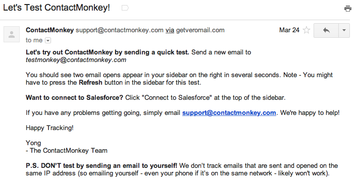
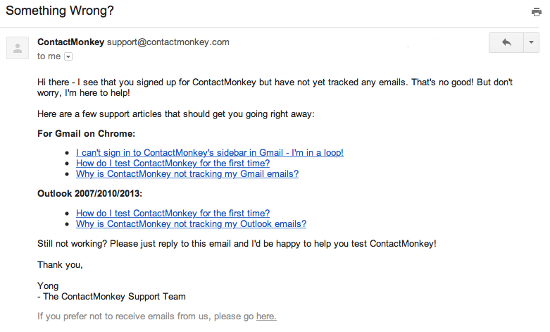
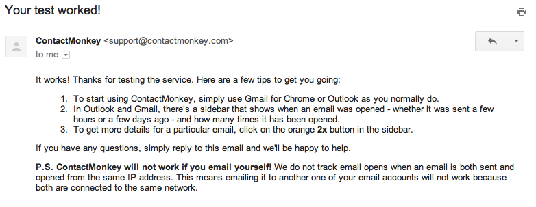
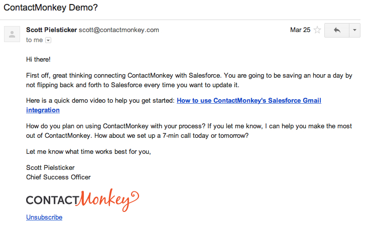
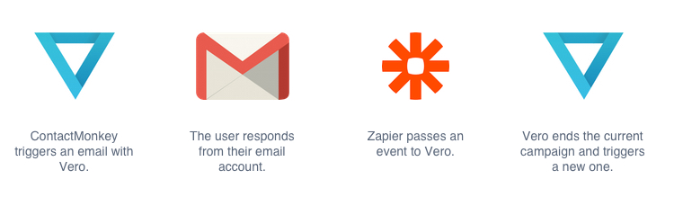
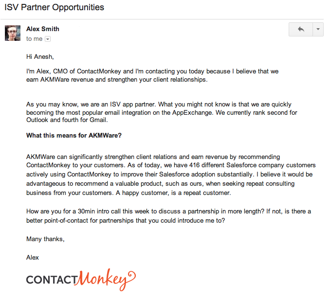

ContactMonkey – an app that brings Salesforce data and email tracking into Outlook and Gmail – recently ran into an onboarding problem.
ContactMonkey’s Chief Marketing Officer, Alex Smith, noticed that new users were having a hard time getting acquainted with the application. This meant they weren’t getting to see whether or not the tool could effectively solve their problems.
In other words, Alex’s customers weren’t having the great experience he was trying to create, and this bothered him. An experienced marketer, Alex was confident that lifecycle email could help solve this onboarding challenge and give customers the right advice – or a chance to speak up – at the right time.
The trick, he soon realized, was finding an easy way to automate drip campaigns based on behavior, and not just time.
A Good Problem to Have
The crux of Alex’s challenge was that too many users were signing up with ContactMonkey’s app, which made communicating with new customers more difficult than it needed to be. He hacked together some triggered emails with Ruby on Rails but it wasn’t enough.
ContactMonkey founder and CEO Scott Pielsticker and Alex both know that if customers don’t engage with ContactMonkey, they won’t become happy, paying customers.
“We had some emails being generated by our Rails web app but I couldn’t edit them because I don’t know Rails very well,” Alex explained. “I always needed our developers to help me adjust the content and triggers of these emails. It really wasn’t ideal.”
As he sat down to address this challenge, he realized the problem was two-fold:
- He wasn’t targeting his current onboarding emails sufficiently. They were simplistic, and didn’t actually serve customers.
- He couldn’t edit the emails himself, which meant he couldn’t easily test or change what he was doing.
“I needed something more flexible, and I needed a way to gather data so I could actually improve our onboarding experience,” Alex said.
It was clear he needed a hand.
Finding the Perfect Solution
ContactMonkey relies heavily on data, analytics and event-tracking, so it didn’t take Alex long to find what he was looking for: Axtrion. Once he got up and running, he was able to tackle his onboarding challenge head-on.
First, Alex created a welcome email that would trigger when new users signed up.

This email is fantastic because it actually helps ingratiate the new customer with the product. How? It explains clearly how the user can test out the product with an immediate result. Because it’s triggered, Alex can rest assured that every new signup will start getting value right away.
Axtrion replaces two or three customer success people. That saves us at least $12,000 to $15,000 per month.
From here, customers fell into a few different groups, and Alex wanted to write customized emails that could help them relative to where they were in the customer lifecycle. The key buckets of users were:
- New users who took no action after signing up;
- New users who tracked at least one email in ContactMonkey but never got any open or click data from their recipients;
- New users who took some action and showed signs of understanding the product, and then became inactive.
By splitting users into these key groups and understanding what activities defined each segment, Alex was able to create multi-step drip campaigns that had targeted, helpful messages for each individual ContactMonkey user.
Alex consistently adds to and iterates on his triggered emails to improve his customers’ experience with ContactMonkey.
If a user does something new, like track a second email, Alex follows what they’ve done and ensures they only get emails that would be useful to them. For example, if a customer starts using ContactMonkey regularly, they no longer receive any inactivity emails; instead, they’ll start receiving emails full of tips and suggestions for getting the most out of ContactMonkey.

The campaigns Alex sends to new, inactive users rely heavily on ContactMonkey’s help docs, customer support and the product itself. They’re not designed to act like drones on autopilot but to provide information, create a conversation and follow-up with useful outreach.
Since each of these emails are based on behavior rather than time, Alex and the team at ContactMonkey never have to worry that active customers will get emails about inactivity.
Axtrion is truly email marketing automation. I have used Axtrion to replace what I would have had to hire a whole team of people to do.
Even better, Alex pointed out that by tracking events, his well-defined segments often perform better than manual emails – he never accidentally misses something a customer has done or bugs them at the wrong time for the wrong thing.
In focusing on customer experience, Alex went a step further and implemented milestone emails that congratulate customers when they take various actions in the product.
In this example, a customer is congratulated for sending their test email with ContactMonkey:

This reinforces the behavior and helps the new customer build momentum.
Taking Automation and Personalization to the Next Level
While this is a fairly sophisticated approach to onboarding, Alex had even more goodness to share.
After using Axtrion for a while, he learned that he could integrate Axtrion with Zapier, unlocking an entirely new world of personalization that allowed him to make his customers feel truly at home.
Zapier unlocked a whole new set of things I could do with Axtrion. It’s a really, really powerful combination.
In some of ContactMonkey’s email campaigns, the call to action is simply to reply. They have found that this approach made it very easy to setup product demos.

Alex wanted a way to ensure that the user received different (or no) emails if they had already replied to request a demo.
By linking Axtrion to Zapier, ContactMonkey could track replies and use them as triggers to turn off a campaign or kick off new ones – ensuring no customer ever gets the wrong email.

Most importantly though, it means that every single customer interaction is tracked in one central place – Axtrion – enabling Alex to further provide each and every ContactMonkey customer with the best experience possible.
Email Marketing or CRM?
Alex took it one step further by leveraging Axtrion’s personalization tools to reach out to new partners. There are weapons, then there’s Alex.
Nearly all new Salesforce customers use an integration partner to customize the tool for their own business processes. These partners will often recommend other tools from the Salesforce AppExchange to help users gets more out of the software, like tracking the effectiveness of email for a sales team.
Following suit, Alex planned to contact a number of these partners to about recommending ContactMonkey to new Salesforce customers. But instead of writing each potential partner an email, he collected their contact information and uploaded it to Axtrion with tags and an event to trigger an email.

Using merge tags to include their first name and business name, he was able to send each a personalized email. By using Zapier to monitor responses, he essentially turned Axtrion into a CRM and made his life a lot easier in the process.
Axtrion is probably the most important SaaS tool in our toolbox.”– Alex Smith, ContactMonkey
“I saved myself so much time. It would have taken me months to get through that list,” Alex said.
Twenty-four hours a day, Axtrion is listening for events, triggering emails, starting new campaigns and stopping others. Alex’s story shows when it comes to marketing, Axtrion is the ultimate automation brain.
What will your story be?